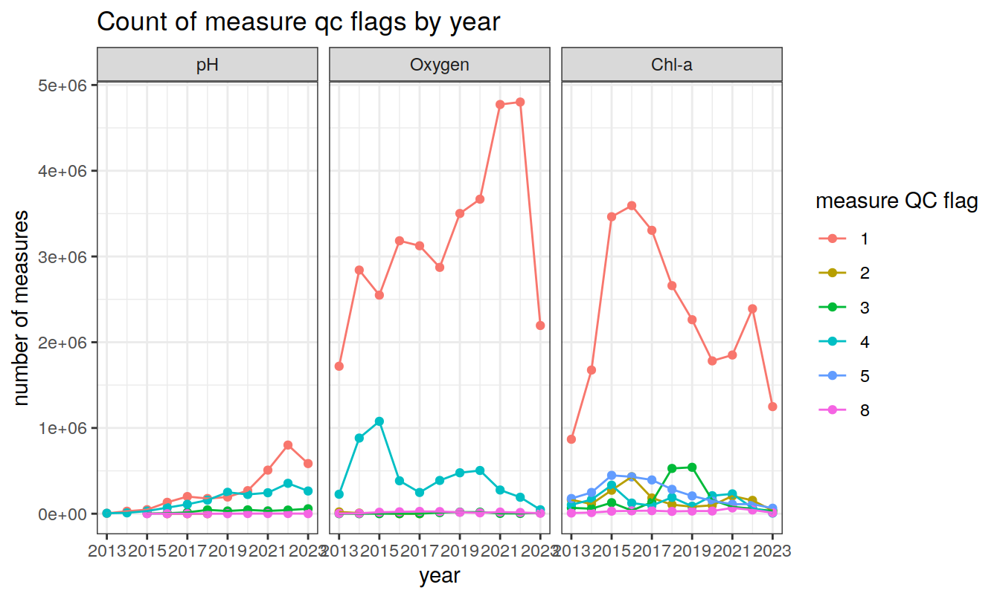

Last updated: 2023-10-27
Checks: 7 0
Knit directory: bgc_argo_r_argodata/
This reproducible R Markdown analysis was created with workflowr (version 1.7.0). The Checks tab describes the reproducibility checks that were applied when the results were created. The Past versions tab lists the development history.
Great! Since the R Markdown file has been committed to the Git repository, you know the exact version of the code that produced these results.
Great job! The global environment was empty. Objects defined in the global environment can affect the analysis in your R Markdown file in unknown ways. For reproduciblity it’s best to always run the code in an empty environment.
The command set.seed(20211008) was run prior to running
the code in the R Markdown file. Setting a seed ensures that any results
that rely on randomness, e.g. subsampling or permutations, are
reproducible.
Great job! Recording the operating system, R version, and package versions is critical for reproducibility.
Nice! There were no cached chunks for this analysis, so you can be confident that you successfully produced the results during this run.
Great job! Using relative paths to the files within your workflowr project makes it easier to run your code on other machines.
Great! You are using Git for version control. Tracking code development and connecting the code version to the results is critical for reproducibility.
The results in this page were generated with repository version 8fac6bb. See the Past versions tab to see a history of the changes made to the R Markdown and HTML files.
Note that you need to be careful to ensure that all relevant files for
the analysis have been committed to Git prior to generating the results
(you can use wflow_publish or
wflow_git_commit). workflowr only checks the R Markdown
file, but you know if there are other scripts or data files that it
depends on. Below is the status of the Git repository when the results
were generated:
Ignored files:
Ignored: .Rhistory
Ignored: .Rproj.user/
Ignored: output/
Untracked files:
Untracked: code/pH_align_climatology.Rmd
Untracked: code/temp_align_climatology.Rmd
Unstaged changes:
Modified: analysis/load_argo_clim_pH_ucsd.Rmd
Modified: code/Workflowr_project_managment.R
Modified: code/start_background_job.R
Modified: code/start_background_job_bgc_load.R
Note that any generated files, e.g. HTML, png, CSS, etc., are not included in this status report because it is ok for generated content to have uncommitted changes.
These are the previous versions of the repository in which changes were
made to the R Markdown (analysis/load_argo.Rmd) and HTML
(docs/load_argo.html) files. If you’ve configured a remote
Git repository (see ?wflow_git_remote), click on the
hyperlinks in the table below to view the files as they were in that
past version.
| File | Version | Author | Date | Message |
|---|---|---|---|---|
| Rmd | 8fac6bb | ds2n19 | 2023-10-27 | maintaining file_id in all datasets |
| html | 93b4545 | ds2n19 | 2023-10-18 | Build site. |
| Rmd | 7af09d6 | ds2n19 | 2023-10-18 | standard range v climatology, season order resolved and count labels to |
| Rmd | 8edb9f4 | ds2n19 | 2023-10-17 | BGC load process aligned to core load. Associated changes to pH and oxygen analysis. |
| html | db6fc8a | ds2n19 | 2023-10-17 | Build site. |
| Rmd | ed8e997 | ds2n19 | 2023-10-17 | Revised version of BGC load to match core load process |
| html | 0ee3427 | ds2n19 | 2023-10-16 | Build site. |
| Rmd | 82d027d | ds2n19 | 2023-10-16 | Revised version of BGC load to match core load process |
| Rmd | 3f6800f | ds2n19 | 2023-10-14 | Changes to core load to create a simple qc flag summary |
| Rmd | fad0b84 | ds2n19 | 2023-10-04 | Changed BGC Argo location folders |
| html | 7b3d8c5 | pasqualina-vonlanthendinenna | 2022-08-29 | Build site. |
| Rmd | 8e81570 | pasqualina-vonlanthendinenna | 2022-08-29 | load and add in core-argo data (1 month) |
| html | bdd516d | pasqualina-vonlanthendinenna | 2022-05-23 | Build site. |
| Rmd | b41e65f | pasqualina-vonlanthendinenna | 2022-05-23 | recreate data in bgc_argo_preprocessed_data |
| html | dfe89d7 | jens-daniel-mueller | 2022-05-12 | Build site. |
| Rmd | f29dafc | jens-daniel-mueller | 2022-05-11 | manual commit |
Load BGC data for analysis
Determine if files are refreshed from dac or cache directory is used. Are metadata, temperature, salinity and BGC property year files renewed? Are the consolidated all year files created from the individual year files?
# opt_refresh_cache
# FALSE = do not refresh cache.
# TRUE = refresh cache. (any none zero value will force a refresh)
opt_refresh_cache = FALSE
# opt_min_year and opt_max_year
# year to be refreshed are set by opt_min_year and opt_max_year
opt_min_year = 2013
opt_max_year = 2023
# opt_review_mode
# if set (1) the processing will take place in a sub-directory opt_review_dir and only process 10 days of profiles per year to reduce size
# of output and processing time
opt_review_mode = FALSE
opt_review_dir = "/review_mode"
#if (opt_review_mode) {
# path_argo_preprocessed <- paste0(path_argo_core, "/preprocessed_data", opt_review_dir)
#}
# opt_qc_only
# Avoids reprocessing files and ensures qc summary plots are created from a previous run!
# FALSE = carry out reprocessing based on options set above and create QC summaries.
# TRUE = do NOT reprocessing files and just create QC summaries from previous loads.
opt_qc_only = FALSE
# opt_n_prof_sel
# The selection criteria that is used against n_prof, here set to 1
# Description of n_prof usage is provided at https://argo.ucsd.edu/data/data-faq/version-3-profile-files/ the next two lines are from that page.
# The main Argo CTD profile is stored in N_PROF=1. All other parameters (including biogeochemical parameters) that are measured
# with the same vertical sampling scheme and at the same location and time as the main Argo CTD profile are also stored in N_PROF=1.
opt_n_prof_sel = 1Directory where the core-Argo profile files are stored. Either use the cached files or force a refresh from dac (long process)
if (!opt_qc_only) {
# set cache directory
argo_set_cache_dir(cache_dir = path_argo)
# check cache directory
argo_cache_dir()
# check argo mirror
argo_mirror()
# age argument: age of the cached files to update in hours (Inf means always use the cached file, and -Inf means always download from the server)
# ex: max_global_cache_age = 5 updates files that have been in the cache for more than 5 hours, max_global_cache_age = 0.5 updates
# files that have been in the cache for more than 30 minutes, etc.
if (opt_refresh_cache){
argo_update_global(max_global_cache_age = -Inf)
argo_update_data(max_data_cache_age = -Inf)
} else {
argo_update_global(max_global_cache_age = Inf)
argo_update_data(max_data_cache_age = Inf)
}
}Builds yearly files for temperature, salinity, BGC properties and metadata that can be consolidated in the next code chunk (consolidate_into_allyears). Load in the synthetic (merged core and bgc) index files (uses the data stored on the ifremer server by default), keeping only delayed-mode data.
A core-Argo profile contains the CTD sensor parameters (pressure, temperature, salinity) that are measured with the same vertical sampling scheme and at the same location and time. Additional parameters from other sensors are stored in the b-Argo profile files.
A b-Argo profile contains all the parameters from a float, except the
core-Argo parameters temperature, pressure, and salinity. A float that
performs only CTD measurements does not have a b-Argo file. The vertical
level PRES is the simple and unambiguous link between the
parameters in the core-Argo and b-Argo files. The same PRES
is recorded in the core-Argo and b-Argo files. PRES is the only
parameter duplicated in core-Argo and b-Argo profile files.
To facilitate the use of BGC-Argo data, the regional data centers merge each b-Argo file with its corresponding core-Argo file into one synthetic (s-Argo) file. The goal of a simplified s-Argo file is to co-locate as many BGC observations as possible while preserving the character of the sampling pattern, i.e., sample interval, number of samples, and approximate pressure locations. Data come from the single c- and b-Argo files. The synthetic pressure axis is constructed from the BGC sampling levels from each cycle. This means that there is no fixed vertical grid for all floats and all cycles.
The co-location takes different vertical attachments of BGC sensors into account by displacing the pressure location, which is not the case in the c- and b-files. The single-cycle s–file profiles contain all the c-file parameter observations in their original location and resolution.
The adjusted pressure parameter (pres_adjusted) is only
available in the core- and s-Argo profile files. The variables
profile_pres_qc, pres_adjusted, and
pres_adjusted_error, are not duplicated in the b-Argo
files.
Delayed-mode data are denoted by data_mode = 'D', and
are quality-checked by PIs, who apply any necessary adjustments. For the
core CTD data, delayed-mode data is generally available 12 months after
the transmission of raw data, because the raw data is usually of good
quality. Their delayed-mode assessment involves evaluation of the
long-term sensor stability, which typically requires a float record of
12 months. Incorrect QC flag attribution and erroneous raw data not
flagged during real-time procedures are corrected in delayed-mode.
Delayed-mode BGC data may be available as early as 5-6 cycles after
initial data transmission as the raw data are typically unfit for
scientific usage. Adjustments significantly increase the accuracy of
these data. In b- and s-Argo profile files, the variable
parameter_data_mode indicates the mode of each parameter.
Biogeochemical parameters in the same file may receive their
delayed-mode adjustments at different times.
Synthetic files info: https://archimer.ifremer.fr/doc/00445/55637/80863.pdf
Argo User Manual: https://archimer.ifremer.fr/doc/00187/29825/86414.pdf
Load index file that forms the basis of subsequent sections that load data and metadata
if (!opt_qc_only) {
# if working in reiew mode only consider first 10 days of opt_max_year
if (opt_review_mode) {
bgc_index <- argo_global_synthetic_prof() %>%
argo_filter_data_mode(data_mode = 'delayed') %>%
argo_filter_date(date_min = paste0(opt_max_year, "-01-01"),
date_max = paste0(opt_max_year, "-01-10"))
} else {
bgc_index <- argo_global_synthetic_prof() %>%
argo_filter_data_mode(data_mode = 'delayed') %>%
argo_filter_date(date_min = paste0(opt_min_year, "-01-01"),
date_max = paste0(opt_max_year, "-12-31"))
}
}Read in the adjusted bgc and core variables corresponding to the index files downloaded above, with their quality control flags. (can take a while)
if (!opt_qc_only) {
bgc_data <- argo_prof_levels(
path = bgc_index,
vars =
c(
'PRES_ADJUSTED',
'PRES_ADJUSTED_QC',
'PRES_ADJUSTED_ERROR',
'PSAL_ADJUSTED',
'PSAL_ADJUSTED_QC',
'PSAL_ADJUSTED_ERROR',
'TEMP_ADJUSTED',
'TEMP_ADJUSTED_QC',
'TEMP_ADJUSTED_ERROR',
'DOXY_ADJUSTED',
'DOXY_ADJUSTED_QC',
'DOXY_ADJUSTED_ERROR',
'NITRATE_ADJUSTED',
'NITRATE_ADJUSTED_QC',
'NITRATE_ADJUSTED_ERROR',
'PH_IN_SITU_TOTAL_ADJUSTED',
'PH_IN_SITU_TOTAL_ADJUSTED_QC',
'PH_IN_SITU_TOTAL_ADJUSTED_ERROR'
),
quiet = TRUE
)
# read in the profiles (takes a while)
# see option section above for rational of why we only want n_prof = 1 profiles.
# Note as working with symthetic profiles has no impact.
bgc_data <- bgc_data %>%
filter(n_prof == opt_n_prof_sel)
}Read in the corresponding metadata:
if (!opt_qc_only) {
bgc_metadata <- argo_prof_prof(path = bgc_index)
# see option section above for rational of why we only want n_prof = 1 profiles
# Note as working with symthetic profiles has no impact.
bgc_metadata <- bgc_metadata %>%
filter(n_prof == opt_n_prof_sel)
# Select just the columns we are interested in
bgc_metadata <- bgc_metadata %>%
select (
file,
date,
latitude,
longitude,
platform_number,
cycle_number,
position_qc,
profile_pres_qc,
profile_temp_qc,
profile_psal_qc,
profile_doxy_qc,
profile_nitrate_qc,
profile_ph_in_situ_total_qc
)
}Join the metadata and data together into one dataset
if (!opt_qc_only) {
bgc_merge <- full_join(bgc_data, bgc_metadata)
bgc_merge <- bgc_merge %>%
rename(lon = longitude,
lat = latitude) %>%
mutate(lon = if_else(lon < 20, lon + 360, lon)) %>%
mutate(
lat = cut(lat, seq(-90, 90, 1), seq(-89.5, 89.5, 1)),
lat = as.numeric(as.character(lat)),
lon = cut(lon, seq(20, 380, 1), seq(20.5, 379.5, 1)),
lon = as.numeric(as.character(lon))
) %>%
mutate(depth = gsw_z_from_p(pres_adjusted, latitude = lat) * -1.0,
.before = pres_adjusted)
# Harmonise metadata
bgc_metadata <- bgc_metadata %>%
rename(lon = longitude,
lat = latitude) %>%
mutate(lon = if_else(lon < 20, lon + 360, lon)) %>%
mutate(
lat = cut(lat, seq(-90, 90, 1), seq(-89.5, 89.5, 1)),
lat = as.numeric(as.character(lat)),
lon = cut(lon, seq(20, 380, 1), seq(20.5, 379.5, 1)),
lon = as.numeric(as.character(lon))
)
# Create fileid dataframe and link back to merge and metadata
bgc_fileid <- unique(bgc_merge$file)
bgc_fileid <- tibble(bgc_fileid)
bgc_fileid <- bgc_fileid %>% select (file = bgc_fileid)
bgc_fileid <- tibble::rowid_to_column(bgc_fileid, "file_id")
# Change metadate, data and merge to have file_id
bgc_metadata <- full_join(bgc_metadata, bgc_fileid)
bgc_metadata <- bgc_metadata %>%
select(-c(file))
bgc_merge <- full_join(bgc_merge, bgc_fileid)
bgc_merge <- bgc_merge %>%
select(-c(file))
bgc_data <- full_join(bgc_data, bgc_fileid)
bgc_data <- bgc_data %>%
select(-c(file))
# Summary measurement QC data
bgc_data_qc <- bgc_merge %>%
select (
'date',
'pres_adjusted_qc',
'psal_adjusted_qc',
'temp_adjusted_qc',
'doxy_adjusted_qc',
'nitrate_adjusted_qc',
'ph_in_situ_total_adjusted_qc'
) %>%
mutate(year = year(date),
.after = date)
# Create the summary file that is used later for qc analysis
bgc_measure_summary <- bgc_data_qc %>%
group_by(year, measure_order = 1, measure = "Pressure", measure_qc = pres_adjusted_qc) %>%
summarise(count_measure = n())
bgc_measure_summary <- rbind(bgc_measure_summary, bgc_data_qc %>%
group_by(year, measure_order = 2, measure = "Temperature", measure_qc = temp_adjusted_qc) %>%
summarise(count_measure = n()))
bgc_measure_summary <- rbind(bgc_measure_summary, bgc_data_qc %>%
group_by(year, measure_order = 3, measure = "Salinity", measure_qc = psal_adjusted_qc) %>%
summarise(count_measure = n()))
bgc_measure_summary <- rbind(bgc_measure_summary, bgc_data_qc %>%
group_by(year, measure_order = 4, measure = "pH", measure_qc = ph_in_situ_total_adjusted_qc) %>%
summarise(count_measure = n()))
bgc_measure_summary <- rbind(bgc_measure_summary, bgc_data_qc %>%
group_by(year, measure_order = 5, measure = "Oxygen", measure_qc = doxy_adjusted_qc) %>%
summarise(count_measure = n()))
bgc_measure_summary <- rbind(bgc_measure_summary, bgc_data_qc %>%
group_by(year, measure_order = 6, measure = "Nitrate", measure_qc = nitrate_adjusted_qc) %>%
summarise(count_measure = n()))
rm(bgc_data_qc)
bgc_measure_summary %>%
write_rds(file = paste0(path_argo_preprocessed, "/bgc_measure_summary.rds"))
}All pH data from BGC floats with QC flag 1 (good data) ph_surface: pH data in the top 20 m of the watercolumn with QC flag 1
if (!opt_qc_only) {
bgc_merge_pH_qc_1 <- bgc_merge %>%
filter(ph_in_situ_total_adjusted_qc == '1') %>%
select(
file_id,
date,
lat,
lon,
depth,
psal_adjusted,
temp_adjusted,
temp_adjusted_qc,
ph_in_situ_total_adjusted,
ph_in_situ_total_adjusted_qc,
platform_number,
cycle_number,
profile_ph_in_situ_total_qc,
profile_temp_qc
)
# create a dataframe of full pH data (only good data) with corresponding CTD and metadata, in a 1x1º longitude/latitude grid
ph_merge_1x1 <- bgc_merge %>%
select(
-c(doxy_adjusted:nitrate_adjusted_error),
-c(profile_doxy_qc, profile_nitrate_qc)
) %>%
filter(ph_in_situ_total_adjusted_qc == '1') %>%
mutate(year = year(date),
month = month(date),
.after = n_prof)
# create a dataframe of pH data in the surface ocean (upper 20 m of the watercolumn), in a 1x1º longitude/latitude grid
ph_surface_1x1 <- ph_merge_1x1 %>%
filter(between(depth, 0, 20))
# create a dataframe of pH for the surface ocean (upper 20 m of the watercolumn) in a 2x2º longitude/latitude grid
ph_surface_2x2 <- ph_surface_1x1 %>%
mutate(
lat = cut(lat, seq(-90, 90, 2), seq(-89, 89, 2)),
lat = as.numeric(as.character(lat)),
lon = cut(lon, seq(20, 380, 2), seq(21, 379, 2)),
lon = as.numeric(as.character(lon))
) # regrid into 2x2º grid
}All temperature data from BGC floats with QC flag 1
if (!opt_qc_only) {
# Include bgc_merge_temp_qc == 8 as this is as good as 1 and matches the BGC data points
bgc_merge_temp_qc_1 <- bgc_merge %>%
filter(temp_adjusted_qc == '1' | temp_adjusted_qc == '8') %>%
select(file_id, date, lat, lon,
depth, temp_adjusted,
platform_number, cycle_number,
temp_adjusted_qc, ph_in_situ_total_adjusted_qc,
profile_temp_qc,
profile_ph_in_situ_total_qc)
}BGC-temperature data with QC flags A and B, irrespective of whether a corresponding pH measurement exists
if (!opt_qc_only) {
bgc_merge_temp_AB <- bgc_merge %>%
filter(profile_temp_qc == 'A' | profile_temp_qc == 'B') %>%
filter(temp_adjusted_qc == '1' | temp_adjusted_qc == '8') %>%
select(file_id, date, lat, lon,
depth, temp_adjusted, temp_adjusted_qc,
platform_number, cycle_number,
profile_temp_qc)
}pH and temperature data from floats where both variables have full profiles with QC flag A
if (!opt_qc_only) {
# create a dataframe with temperature and pH profile flags A and B only
# keep only temperature observations where good pH data exists:
# using only complete profiles, and temperature data where pH measurements exist:
bgc_merge_flag_AB <- bgc_merge %>%
filter(profile_ph_in_situ_total_qc %in% c('A', 'B'),
profile_temp_qc %in% c('A', 'B')) %>%
select(file_id, depth,
temp_adjusted:temp_adjusted_error,
ph_in_situ_total_adjusted:ph_in_situ_total_adjusted_error,
platform_number,
cycle_number,
date,
lat, lon,
profile_temp_qc,
profile_ph_in_situ_total_qc) %>%
filter(!is.na(ph_in_situ_total_adjusted))
# no NA temperature values
# 518 340 total observations
}pH and temperature data where both variables have QC flags 1
if (!opt_qc_only) {
# Include bgc_merge_temp_qc == 8 as this is as good as 1 and matches the BGC data points
bgc_merge_qc_1 <- bgc_merge %>%
filter(ph_in_situ_total_adjusted_qc == '1' & (temp_adjusted_qc == '1' | temp_adjusted_qc == '8')) %>%
select(file_id, depth,
temp_adjusted:temp_adjusted_error,
ph_in_situ_total_adjusted:ph_in_situ_total_adjusted_error,
platform_number,
cycle_number,
date,
lat, lon,
profile_temp_qc,
profile_ph_in_situ_total_qc)
}if (!opt_qc_only) {
bgc_index %>%
write_rds(file = paste0(path_argo_preprocessed, "/bgc_index.rds"))
bgc_data %>%
write_rds(file = paste0(path_argo_preprocessed, "/bgc_data.rds"))
bgc_merge %>%
write_rds(file = paste0(path_argo_preprocessed, "/bgc_merge.rds"))
bgc_fileid %>%
write_rds(file = paste0(path_argo_preprocessed, "/bgc_fileid.rds"))
bgc_merge_pH_qc_1 %>%
write_rds(file = paste0(path_argo_preprocessed, "/bgc_merge_pH_qc_1.rds"))
bgc_merge_temp_qc_1 %>%
write_rds(file = paste0(path_argo_preprocessed, "/bgc_merge_temp_qc_1.rds"))
bgc_merge_temp_AB %>%
write_rds(file = paste0(path_argo_preprocessed, "/bgc_merge_temp_AB.rds"))
bgc_merge_flag_AB %>%
write_rds(file = paste0(path_argo_preprocessed, "/bgc_merge_flag_AB.rds"))
bgc_merge_qc_1 %>%
write_rds(file = paste0(path_argo_preprocessed, "/bgc_merge_qc_1.rds"))
ph_merge_1x1 %>%
write_rds(file = paste0(path_argo_preprocessed, "/ph_merge_1x1.rds"))
bgc_metadata %>%
write_rds(file = paste0(path_argo_preprocessed, "/bgc_metadata.rds"))
ph_surface_1x1 %>%
write_rds(file = paste0(path_argo_preprocessed, "/ph_surface_1x1.rds"))
ph_surface_2x2 %>%
write_rds(file = paste0(path_argo_preprocessed, "/ph_surface_2x2.rds"))
}Produce a summary of profile QC flags (A-F)
# Read metadata file and create profile summary table with a count for each year, measurement type and qc option
bgc_metadata <-
read_rds(file = paste0(path_argo_preprocessed, "/bgc_metadata.rds"))
bgc_metadata["profile_pres_qc"][is.na(bgc_metadata["profile_pres_qc"])] <- ""
bgc_metadata["profile_temp_qc"][is.na(bgc_metadata["profile_temp_qc"])] <- ""
bgc_metadata["profile_psal_qc"][is.na(bgc_metadata["profile_psal_qc"])] <- ""
bgc_metadata["profile_doxy_qc"][is.na(bgc_metadata["profile_doxy_qc"])] <- ""
bgc_metadata["profile_nitrate_qc"][is.na(bgc_metadata["profile_nitrate_qc"])] <- ""
bgc_metadata["profile_ph_in_situ_total_qc"][is.na(bgc_metadata["profile_ph_in_situ_total_qc"])] <- ""
bgc_profile_summary <- bgc_metadata %>%
filter (profile_temp_qc != "") %>%
group_by(
year = format(date, "%Y"),
measure = "Temperature",
measure_order = 2,
profile_qc = profile_temp_qc
) %>%
summarise(
count_profiles = n()
)
bgc_profile_summary <- rbind(bgc_profile_summary,
bgc_metadata %>%
filter (profile_ph_in_situ_total_qc != "") %>%
group_by(
year = format(date, "%Y"),
measure = "pH",
measure_order = 4,
profile_qc = profile_ph_in_situ_total_qc
) %>%
summarise(
count_profiles = n()
))
bgc_profile_summary <- rbind(bgc_profile_summary,
bgc_metadata %>%
filter (profile_doxy_qc != "") %>%
group_by(
year = format(date, "%Y"),
measure = "oxygen",
measure_order = 5,
profile_qc = profile_doxy_qc
) %>%
summarise(
count_profiles = n()
))
# modify data frame to prepare for plotting
bgc_profile_summary <- ungroup(bgc_profile_summary)
bgc_profile_summary <- bgc_profile_summary %>% group_by(measure_order)
bgc_profile_summary <- transform(bgc_profile_summary, year = as.numeric(year))
year_min <- min(bgc_profile_summary$year)
year_max <- max(bgc_profile_summary$year)
facet_label <- as_labeller(c("2"="Temperature", "4"="pH", "5"="Oxygen"))
# draw plots for the separate parameters
bgc_profile_summary %>%
ggplot(aes(x = year, y = count_profiles, col = profile_qc, group=profile_qc)) +
geom_point() +
geom_line() +
facet_wrap(~measure_order, labeller = facet_label) +
scale_x_continuous(breaks = seq(year_min, year_max, 2)) +
labs(x = 'year',
y = 'number of profiles',
col = 'profile QC flag',
title = 'Count of profile qc flags by year')
Produce a summary of current measurement QC flags (1-9)
# Read temp and meta_data
bgc_measure_summary <-
read_rds(file = paste0(path_argo_preprocessed, "/bgc_measure_summary.rds"))
bgc_measure_summary <- ungroup(bgc_measure_summary)
year_min <- min(bgc_measure_summary$year)
year_max <- max(bgc_measure_summary$year)
# draw plots for the separate parameters
bgc_measure_summary %>%
filter(measure_qc != " " & measure_order %in% c(2, 4, 5)) %>%
ggplot(aes(x = year, y = count_measure, col = measure_qc, group=measure_qc)) +
geom_point() +
geom_line() +
facet_wrap(~measure_order, labeller = facet_label) +
scale_x_continuous(breaks = seq(year_min, year_max, 2)) +
labs(x = 'year',
y = 'number of measures',
col = 'measure QC flag',
title = 'Count of measure qc flags by year')
The resulting bgc_merge dataframe contains:
the file name (file column)
the sampling level (n_level column)
the number of profiles per file (n_prof column; Each
single-cycle synthetic profile has the dimension
n_prof = 1).
adjusted values for pressure (pres, in dbar),
salinity (psal, in psu), temperature (temp, in
degrees C), dissolved oxygen (doxy, in µmol
kg-1), pH (ph_in_situ_total), and nitrate
(nitrate, in µmol kg-1)
(parameter_adjusted columns). This column is mandatory, so
if no adjustment was performed (i.e. parameter_adjusted
does not exist), FillValue is inserted (e.g.,
temp_adjusted:FillValue = 99999.f). If the raw value did
not require adjustment in delayed-mode, then
parameter_adjusted = parameter.
a quality control flag associated with these adjusted values
(parameter_adjusted_qc columns). If an adjusted value does
not exist (e.g., temp_adjusted = 99999.f), then FillValue
is inserted (e.g., temp_adjusted_qc = " ").
an error estimate on the adjustment of the measurement
(parameter_adjusted_error columns). If no adjusted value
exists (e.g., temp_adjusted = 99999.f), then FillValue is
inserted (e.g., temp_adjusted_error = 99999.f)
WMO float identifier (platform_number
column)
name of the project in charge of the float
(project_name column)
name of principal investigator in charge of the float
(pi_name column)
float cycle number (cycle_number column; cycle 0
is the launch cycle during which technical data or configuration
information is transmitted; cycle 1 is the first complete
cycle)
descending (D) or ascending (A) profile (direction
column). Profile measurements are taken on ascent, occasionally
during descent (rarely both).
code for the data centre in charge of the float data management
(data_centre column)
the type of float (platform_type column)
firmware version of the float (firmware_version
column)
instrument type from the WMO code table 1770
(wmo_inst_type column)
the date and time at which the measurement was taken, in UTC
(date column)
a quality control flag for the date and time value
(date_qc column)
the date and time of the profile location
(date_location column)
latitude in degrees N (latitude column)
longitude in degrees E (longitude column)
quality control flag on the position (position_qc
column)
name of the system in charge of positioning the float locations
(positioning_system column)
unique number of the mission to which this float belongs
(config_mission_number column,
a global quality control flag on the profile of the parameter
(profile_parameter_qc column; FillValue = ” “)
QC flags for values (‘parameter_adjusted_qc’ columns)
are between 1 and 8, where:
1 is ‘good’ data,
2 is ‘probably good’ data,
3 is ‘probably bad’ data,
4 is ‘bad’ data,
5 is ‘value changed’,
8 is ‘estimated value’,
9 is ‘missing value’ (data parameter will record FillValue)
(6 and 7 are not used).
Profile QC flags (‘profile_parameter_qc’ columns) are QC
codes attributed to the entire profile, and indicate the number of depth
levels (in %) where the value is considered to be good data (QC flags of
1, 2, 5, and 8; QC flags of 9 or ” ” are not used in the
computation):
‘A’ means 100% of profile levels contain good data,
‘B’ means 75-<100% of profile levels contain good data,
‘C’ means 50-75% of profile levels contain good data,
‘D’ means 25-50% of profile levels contain good data,
‘E’ means >0-25% of profile levels contain good data,
‘F’ means 0% of profile levels contain good data.
There are two levels of Argo data quality control:
If a float WMO ID cannot be matched to the correct float platform then none of the data will be distributed.
This test requires that the Julian Day of the float be later than 1st January 1997 and earlier than the current date of the check (in UTC time). If the date of a profile fails this test, the date of the profile should be flagged as bad data (‘4’) and none of the profile data is distributed.
This test requires that the observation latitude and longitude of a float be sensible, with latitude in the range -90 to 90º, and longitude in the range -180 to 180º.
If either latitude or longitude fails this test, the position is flagged as bad data (‘4’) and none of the profile data is distributed.
This test requires that the observation latitude and longitude be located in an ocean. If a position cannot be located in an ocean, the position is flagged as bad data (‘4’) and none of the profile data is distributed.
Drift speeds for floats can be generated given the positions and times of the floats when they are at the sea surface and between profiles. In all cases, we would not expect the drift speed to exceed 3 ms-1. If it does, it means either the positions or times are bad data, or a float is mislabeled. Using the multiple positions and times that are normally available for a float while at the sea surface, it is often possible to isolate the one position or time that is an error.
If an acceptable position and time can be used from the available suite, then the data can be distributed. Otherwise, the position, the time, or both, are flagged as bad data (‘4’) and the profile data is not distributed.
This test applies a gross filter on the values of TEMP,
PRES, and PSAL. The ranges need to accommodate
all of the expected extremes in the ocean.
PRES < -5,
then PRES_QC = ‘4’, TEMP_QC = ‘4’, and
PSAL_QC = ‘4’.PRES ≤ -2.4, then PRES_QC =
‘3’, TEMP_QC = ‘3’, PSAL_QC = ‘3’.TEMP_QC = ‘4’.PSAL_QC = ‘4’.DOXY should be in the range -5 to 600 µmol
kg-1. Outside of this range, DOXY_QC = '4'.PH_IN_SITU_TOTAL should be in the range 7.3 to 8.5.
Outside of this range, PH_IN_SITU_TOTAL_QC = '4'.This test applies to certain regions of the world where conditions can be further qualified. In this case, specific ranges for observations from the Mediterranean Sea and the Red Sea further restrict what can be accepted as reasonable values.
If a value fails this test, it is flagged as bad data (‘4’) and removed from the initial distribution. If temperature and salinity at the same pressure level both fail this test, both values are flagged as bad data (‘4’) and values for pressure, temperature, and salinity are removed from the distribution.
This test requires that the vertical profile has pressures that are monotonically increasing (assuming the pressure levels are ordered from smallest to largest).
If there is a region of constant pressure, all but the first of the consecutive constant pressure levels is flagged as bad data (‘4’). If there is a region where pressure reverses, all of the pressures in the reversed part of the profile are flagged as bad data (‘4’). All pressures flagged as bad data and associated temperatures and salinities are removed.
The difference between sequential measurements, where one measurement is significantly different from adjacent ones, is a spike in both size and gradient. This test does not consider differences in pressure, but assumes a sampling that adequately reproduces changes in temperature and salinity with pressure.
Test value = | V2 - (V3 + V1)/2 | - | (V3 - V1)/2 |
where V2 is the measurement being tested, and V1 and V3 are the values above and below.
Temperature: the V2 value is flagged when:
Salinity: the V2 value is flagged when:
DOXY: the V2 value is flagged when:
For pH:
Test value 2 = | V2 - median(V0, V1, V2, V3, V4) |
where the test value represents the anomaly of the observed pH from the median of the surrounding data. A pH data point is considered a spike and flagged as bad (‘4’) if Test Value 2 > 0.04pH
If the value V2 fails this test, it is flagged as bad data (‘4’) and is removed. If temperature and salinity both fail this test, both values are flagged as bad data (‘4’) and values for temperature, salinity and pressure are removed.
This test is failed when the difference between vertically adjacent measurements is too steep. The test does not consider changes in depth, but assumes a sampling that adequately reproduces changes in DOXY with depth
Test value = | V2 - (V3 + V1)/2 |
where V2 is the value being tested as a spike, and V1 and V3 are the values above and below.
For DOXY, V2 is flagged when:
the test value exceeds 50 µmol kg-1 for pressures less than 500 dbar, or
the test value exceeds 25 µmol kg-1 for pressures equal to or greater than 500 dbar
Only so many bits are allowed to store temperature and salinity values in a profiling float. This range is not always large enough to accommodate conditions which are encountered in the ocean. When the range is exceeded, stored values rollover to the lower end of the range. This rollover should be detected and compensated for when profiles are constructed from the data stream of the float. This test is used to make sure the rollover is properly detected.
If a value fails this test, it is flagged as bad data (‘4’) and removed from the initial distribution. If temperature and salinity at the same pressure level both fail this test, both values are flagged as bad data (‘4’) and values for pressure, temperature, and salinity are removed from the distribution.
This test looks for CTD and BGC measurements in the same profile being identical.
If this occurs, all of the values affected parameter are flagged as bad data (‘4’) and removed from the distribution. If both temperature and salinity are affected, then all observed values from the profile are flagged as bad data (‘4’).
This test compares potential density between valid measurements in a profile in both directions (i.e., from top to bottom, and from bottom to top). Values of temperature and salinity at the same pressure level Pi are used to compute potential density ρi ( or σi = ρi - 1000) kg m-3, referenced to the mid-point between Pi and the next valid pressure level. A threshold of 0.03 kg m-3 is allowed for small density inversions.
From top to bottom, if the potential density calculated at the greater pressure Pi+1 is less than that calculated at the lesser pressure Pi by more than 0.03 kg m-3, both the temperature and salinity values at pressure Pi are flagged as bad data (‘4’). From bottom to top, if the potential density calculated at the lesser pressure Pi-1 is greater than that calculated at the greater pressure Pi by more than 0.03 kg m-3, both the temperature and salinity values at pressure Pi are flagged as bad data (‘4’). Bad temperature and salinity are removed from the distribution.
This test is implemented as a mechanism for data assembly centers (DACs) to flag, in real-time, sensors that are potentially not working correctly. Each DAC manages a grey list and sends it to the GDACs. The merged grey list from all DACs is available from the GDACs.
Naming convention: xxx_greylist.csv (where
xxx is the DAC name, e.g., aoml_greylist.csv,
coriolis_greylist.csv, etc).
Columns: PLATFORM, PARAMETER,
START_DATE, END_DATE, QC,
COMMENT, DAC
The decision to insert a float parameter in the grey list comes from the PI or the delayed-mode operator. A float parameter should be put in the grey list when the sensor drift is too big to be adjusted in real-time, or when the sensor is judged to be potentially not working correctly.
The grey list concerns only real-time files. When an anomalous float is dead and the offending parameter has been adjusted in delayed-mode, it is removed from the grey list. When an anomalous float is active and the offending parameter has been partially adjusted in delayed-mode, it will remain on the grey list if real-time adjustment is not adequate.
Grey-listed parameters are flagged as probably good (‘2’), probably bad (‘3’) or bad (‘4’) data, as determined by the PI or the delayed-mode operator.
This test is implemented to detect a sudden and significant sensor drift. It calculates the average temperature and salinity from the deepest 100 dbar of a profile and the previous good profile. Only measurements with good QC are used.
For salinity, if the difference between the two average values is more than 0.5 PSU, then all the salinity values of the profile are flagged as probably bad data (‘3’). For temperature, if the difference between the two average values is more than 1 ºC, then all the temperature values from the profile are flagged as probably bad data (‘3’).
This is subjective visual inspection of float measurements by an operator. This test is not mandatory before real-time data distribution.
This test is used to detect a float that produces the same profile (with very small deviations) over and over again. Typically the differences between two profiles are of the order of 0.001 PSU for salinity and of the order 0.01 ºC for temperature.
Derive temperature and salinity profiles by averaging the original profiles to get mean values for each profile in 50 dbar slabs (T_prof, T_previous_prof, S_prof, S_previous_prof). This is necessary because the floats do not sample at the same level in each profile.
Obtain absolute values of the difference between the averaged temperature and salinity profiles as follows:
If a profile fails this test, all measurements from this profile are flagged as bad data (‘4’). If a float fails this test over 5 consecutive cycles, it is inserted in the grey list.
This test requires that a profile has pressures that are not greater
than CONFIG_ProfilePressure_dbar plus 10%. The value of
CONFIG_ProfilePressure_dbar is in the meta.nc file of the
float.
If there is a region of incorrect pressures, those pressures and their corresponding temperature and salinity measurements are flagged as bad data (‘4’). Pressures flagged as bad data and their associated measurements should be removed from distribution.
This test is a set of algorithms based on three main steps:
Temperature and salinity values that fail this test are flagged as bad data (‘4’).
Currently, there is no pH-specific QC test. If one is established, it will be reported with the number ‘56’.
Real-time pH values which pass the real-time QC tests are assigned QC flags of ‘3’. The Argo goals for research-quality data require that pH values be adjusted to receive a quality flag of ‘1’.
Real-time unadjusted DOXYvalues receive QC flags of ‘3’.
This is because the majority of oxygen sensors deployed on BGC Argo
profiling floats are Aanderaa optodes that suffer from pre-deployment
storage drift that can reduce accuracy by up to 20% or more. Because
this is a known bias that affects the majority of oxygen sensors within
the array, and because it can be corrected, DOXY_QC is set
to ‘3’.
Not yet available
The Argo real-time QC tests on CTD data (temperature, salinity, pressure) are performed in the order described in the following table.
A CTD measurement with a QC flag ‘4’ is ignored by other QC tests. A measurement with QC flag ‘2’ or ‘3’ is tested by other QC tests.
A DOXY measurement with a QC flag ‘4’ or ‘3’ is ignored
by other QC tests.
Note that the Test Number is different from the Application Order.
The Test Number (n) is a number assigned permanently to each QC test. It
is used to fill HISTORY_QCTEST in the Argo profile files.
Therefore, each Test Number is uniquely associated to a QC test, and is
never replaced, changed, or duplicated.
Each real-time QC test has a unique Binary ID (2n) of the
unique Test Number (n) is used to record QC tests performed and failed
in the variable HISTORY_QCTEST.
The QC flag assigned by a test cannot override a higher value assigned by a previous QC test.
e.g.: a QC flag ‘4’ (bad data) set by the Grey List Test cannot be decreased to QC flag ‘3’ (bad data that are potentially correctable) set by the Gross Salinity or Temperature Sensor Drift Test.
| Application Order for CTD parameters | Test Number (n) | Binary ID (2n) | Test Name |
|---|---|---|---|
| 1 | 1 | 2 | Platform Identification Test |
| 2 | 2 | 4 | Impossible Date Test |
| 3 | 3 | 8 | Impossible Location Test |
| 4 | 4 | 16 | Position on Land Test |
| 5 | 5 | 32 | Impossible Speed Test |
| 6 | 15 | 32768 | Grey List Test |
| 7 | 19 | 524288 | Deepest Pressure Test |
| 8 | 6 | 64 | Global Range Test |
| 9 | 7 | 128 | Regional Range Test |
| 10 | 8 | 256 | Pressure Increasing Test |
| 11 | 9 | 512 | Spike Test |
| 12 | 25 | 33554432 | MEDD Test |
| 13 | 12 | 4096 | Digit Rollover Test |
| 14 | 13 | 8192 | Stuck Value Test |
| 15 | 14 | 16384 | Density Inversion Test |
| 16 | 16 | 65536 | Gross Salinity or Temperature Sensor Drift Test |
| 17 | 18 | 261144 | Frozen Profile Test |
| 18 | 17 | 131072 | Visual QC Test |
The real-time tests for BGC parameters are performed in the order described in the following table:
| Application order for BGC parameters | Test Number (n) | Binary ID (2n) | Test Name |
|---|---|---|---|
| 1 | 19 | 524288 | Deepest Pressure Test |
| 2 | 1 | 2 | Platform Identification Test |
| 3 | 2 | 4 | Impossible Date Test |
| 4 | 3 | 8 | Impossible Location Test |
| 5 | 4 | 16 | Position on Land Test |
| 6 | 5 | 32 | Impossible Speed Test |
| 7 | 6 | 64 | Global Range Test |
| 8 | 7 | 128 | Regional Range Test |
| 9 | 9 | 512 | Spike Test |
| 10 | 11 | 2048 | Gradient Test |
| 11 | 12 | 4096 | Digit Rollover Test |
| 12 | 13 | 8192 | Stuck Value Test |
| 13 | 15 | 32768 | Grey List Test |
| 14 | 16 | 65536 | Gross Temperature Sensor Drift Test (only for TEMP_DOXY) |
| 15 | 18 | 261144 | Frozen Profile Test |
| 16 | BGC parameter-specific tests | ||
| 17 | 17 | 131072 | Visual QC Test |
The QC flags determined in delayed-mode replace those assigned in real-time because some bad data cannot be detected by the real-time tests, and some good data can be identified wrongly as bad by the real-time tests.
For vertical profile data, delayed-mode operators examine them for
pointwise errors (such as spikes and jumps) and flag them appropriately.
If an error is identified, both PARAM_QC and
PARAM_ADJUSTED_QC record ‘4’. Conversely, if good data have
wrongly been identified as bad by the real-time tests, then
PARAM_QC and PARAM_ADJUSTED_QC record ‘1’.
In SD-files, the variables PROFILE_PARAMETER_QC,
PARAMETER_ADJUSTED, PARAMETER_ADJUSTED_QC, and
PARAMETER_ADJUSTED_ERROR are compulsory. If no adjustment
in delayed-mode is necessary and if the flag is deemed assigned
correctly, then PARAM_ADJUSTED = PARAMETER,
PARAM_ADJUSTED_QC = PARAM_QC, and
PARAM_ADJUSTED_ERROR is provided by the PI.
If no delayed-mode adjustment was performed, then
PARAM_ADJUSTED = 99999.f,
PARAM_ADJUSTED_QC = " ",
PARAM_ADJUSTED_ERROR = 99999.f and
PROFILE_PARAMETER_QC = " ".
If values are deemed unadjustable in delayed-mode, then
PARAM_ADJUSTED_QC = '4', and
PARAM_ADJUSTED = 99999.f and
PARAM_ADJUSTED_ERROR = 99999.f.
The variable PROFILE_PARAMETER_QC is recomputed when
PARAMETER_ADJUSTED_QC becomes available.
Dates
Delayed-mode operators check that the dates in the profile are in
chronological order. Erroneous or missing dates are replaced with
another telemetered value if available, or replaced with interpolated
values and marked DATE_QC = '8'.
Location
Profile positions LONGITUDE, LATITUDE are
checked for outliers. Erroneous or missing dates are replaced with
another telemetered value if available, or replaced with interpolated
values and marked POSITION_QC = '8'.
Pressure, Temperature, Salinity
Delayed-mode quality control of PRES and
TEMP is done by subjective assessment of vertical profile
plots of TEMP vs PRES and PSAL vs
PRES and PRES vs TEMP and
PSAL vs TEMP. This assessment is done in
relation to measurements from the same float, as well as in relation to
nearby floats and historical data. This assessment aims to identify: (a)
erroneous data points that cannot be detected by real-time QC tests, and
(b) vertical profiles that have the wrong shape.
Bad PRES data points identified by visual inspection
from delayed-mode analysts are recorded with
PRES_ADJUSTED_QC = '4' and PRES_QC = '4'. For
these bad data points, TEMP_ADJUSTED_QC,
TEMP_QC, PSAL_ADJUSTED_QC, and
PSAL_QC are also set to ‘4’.
Bad TEMP data points are recorded with
TEMP_ADJUSTED_QC = '4' and TEMP_QC = '4'.
TEMP_ADJUSTED, TEMP_ADJUSTED_QC,
TEMP_ADJUSTED_ERROR are filled even when the data is good
and no adjustment is needed. In these cases,
TEMP_ADJUSTED_ERROR can be the manufacturer’s quoted
accuracy at deployment, which is 0.002 ºC.
Delayed-mode quality control of PSAL is done by checking for sensor offsets and drifts, as well as other instrument errors. Float salinity values that are considered adjustable in delayed-mode are compiled into time-series. Sufficiently long time-series are compared with statistical recommendations and uncertainties to check for sensor drift and offset.
After assessing all available information, the PI records
PSAL_ADJUSTED, PSAL_ADJUSTED_QC, and
PSAL_ADJUSTED_ERROR. Salinity data considered bad and
unadjustable in delayed-mode are given
PSAL_ADJUSTED_QC = '4', and PSAL_ADJUSTED and
PSAL_ADJUSTED_ERROR are set to FillValue.
Oxygen
Raw DOXY values are adjusted in delayed-mode to account
for sensor drift and bias. The errors associated with this calibration
are recorded in DOXY_ADJUSTED_ERROR in µmol
kg-1.
When DOXY for the whole profile is bad and cannot be
adjusted, then DOXY_ADJUSTED = 99999.f,
DOXY_ADJUSTED_ERROR = 99999.f, and
DOXY_ADJUSTED_QC = '4'. The calibration information is
recorded as SCIENTIFIC_CALIB_EQUATION = 'none',
SCIENTIFIC_CALIB_EQUATION = 'none', and
SCIENTIFIC_CALIB_COMMENT = 'Bad data; not adjustable'.
pH
The pH adjustment process depends on having an accurate model for pH below 1000 m, where temporal and spatial variability is minimal. pH values are adjusted using Multiple Linear Regression (MLR) methods, Linearly Interpolated Regression equations, and a neural network prediction system known as CANYON. The expected error in float pH measurements is derived from the uncertainty in the reference data as well as sensor uncertainties.
The empirical algorithms used in the adjustment process for pH are:
the MLR method of Williams et al. (2016)
the LIR method of Carter et al. (2018)
the CANYON method of Sauzede et al. (2017)
The method used for adjustment is recorded in
SCIENTIFIC_CALIB_EQUATION,
SCIENTIFIC_CALIB_COEFFICIENT, and
SCIENTIFIC_CALIB_COMMENT
Quality control manuals
CTD data quality control: https://archimer.ifremer.fr/doc/00228/33951/32470.pdf (http://dx.doi.org/10.13155/33951)
Oxygen data quality control: https://archimer.ifremer.fr/doc/00354/46542/82301.pdf (http://dx.doi.org/10.13155/46542)
pH data quality control: https://archimer.ifremer.fr/doc/00460/57195/61336.pdf (https://doi.org/10.13155/57195)
BGC data quality control: https://archimer.ifremer.fr/doc/00298/40879/42267.pdf (http://dx.doi.org/10.13155/40879)
sessionInfo()R version 4.2.2 (2022-10-31)
Platform: x86_64-pc-linux-gnu (64-bit)
Running under: openSUSE Leap 15.4
Matrix products: default
BLAS: /usr/local/R-4.2.2/lib64/R/lib/libRblas.so
LAPACK: /usr/local/R-4.2.2/lib64/R/lib/libRlapack.so
locale:
[1] LC_CTYPE=en_US.UTF-8 LC_NUMERIC=C
[3] LC_TIME=en_US.UTF-8 LC_COLLATE=en_US.UTF-8
[5] LC_MONETARY=en_US.UTF-8 LC_MESSAGES=en_US.UTF-8
[7] LC_PAPER=en_US.UTF-8 LC_NAME=C
[9] LC_ADDRESS=C LC_TELEPHONE=C
[11] LC_MEASUREMENT=en_US.UTF-8 LC_IDENTIFICATION=C
attached base packages:
[1] stats graphics grDevices utils datasets methods base
other attached packages:
[1] ggOceanMaps_1.3.4 ggspatial_1.1.7 oce_1.7-10 gsw_1.1-1
[5] sf_1.0-9 lubridate_1.9.0 timechange_0.1.1 argodata_0.1.0
[9] forcats_0.5.2 stringr_1.4.1 dplyr_1.0.10 purrr_0.3.5
[13] readr_2.1.3 tidyr_1.2.1 tibble_3.1.8 ggplot2_3.4.0
[17] tidyverse_1.3.2
loaded via a namespace (and not attached):
[1] fs_1.5.2 bit64_4.0.5 progress_1.2.2
[4] httr_1.4.4 rprojroot_2.0.3 tools_4.2.2
[7] backports_1.4.1 bslib_0.4.1 utf8_1.2.2
[10] R6_2.5.1 KernSmooth_2.23-20 rgeos_0.5-9
[13] DBI_1.1.3 colorspace_2.0-3 raster_3.6-11
[16] withr_2.5.0 sp_1.5-1 prettyunits_1.1.1
[19] tidyselect_1.2.0 bit_4.0.5 compiler_4.2.2
[22] git2r_0.30.1 cli_3.4.1 rvest_1.0.3
[25] RNetCDF_2.6-1 xml2_1.3.3 labeling_0.4.2
[28] sass_0.4.4 scales_1.2.1 classInt_0.4-8
[31] proxy_0.4-27 digest_0.6.30 rmarkdown_2.18
[34] pkgconfig_2.0.3 htmltools_0.5.3 highr_0.9
[37] dbplyr_2.2.1 fastmap_1.1.0 rlang_1.1.1
[40] readxl_1.4.1 rstudioapi_0.14 farver_2.1.1
[43] jquerylib_0.1.4 generics_0.1.3 jsonlite_1.8.3
[46] vroom_1.6.0 googlesheets4_1.0.1 magrittr_2.0.3
[49] Rcpp_1.0.10 munsell_0.5.0 fansi_1.0.3
[52] lifecycle_1.0.3 terra_1.7-39 stringi_1.7.8
[55] whisker_0.4 yaml_2.3.6 grid_4.2.2
[58] parallel_4.2.2 promises_1.2.0.1 crayon_1.5.2
[61] lattice_0.20-45 haven_2.5.1 hms_1.1.2
[64] knitr_1.41 pillar_1.8.1 codetools_0.2-18
[67] reprex_2.0.2 glue_1.6.2 evaluate_0.18
[70] modelr_0.1.10 vctrs_0.5.1 tzdb_0.3.0
[73] httpuv_1.6.6 cellranger_1.1.0 gtable_0.3.1
[76] assertthat_0.2.1 cachem_1.0.6 xfun_0.35
[79] broom_1.0.1 e1071_1.7-12 later_1.3.0
[82] class_7.3-20 googledrive_2.0.0 gargle_1.2.1
[85] workflowr_1.7.0 units_0.8-0 ellipsis_0.3.2